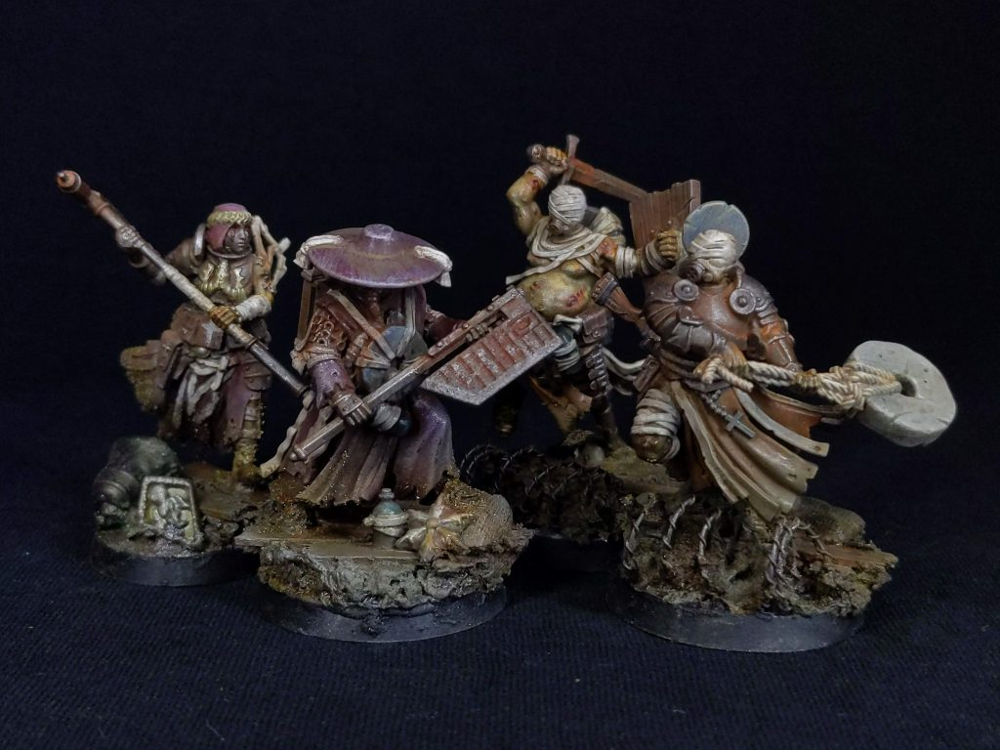
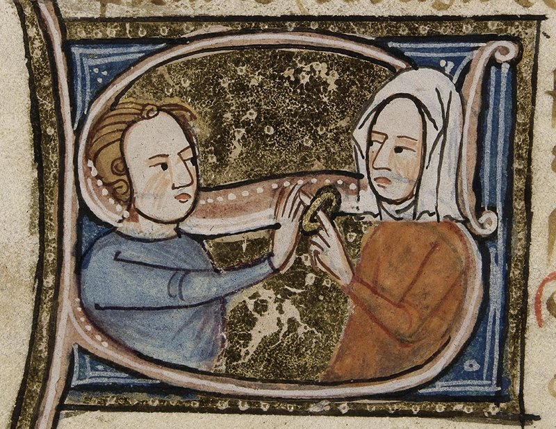
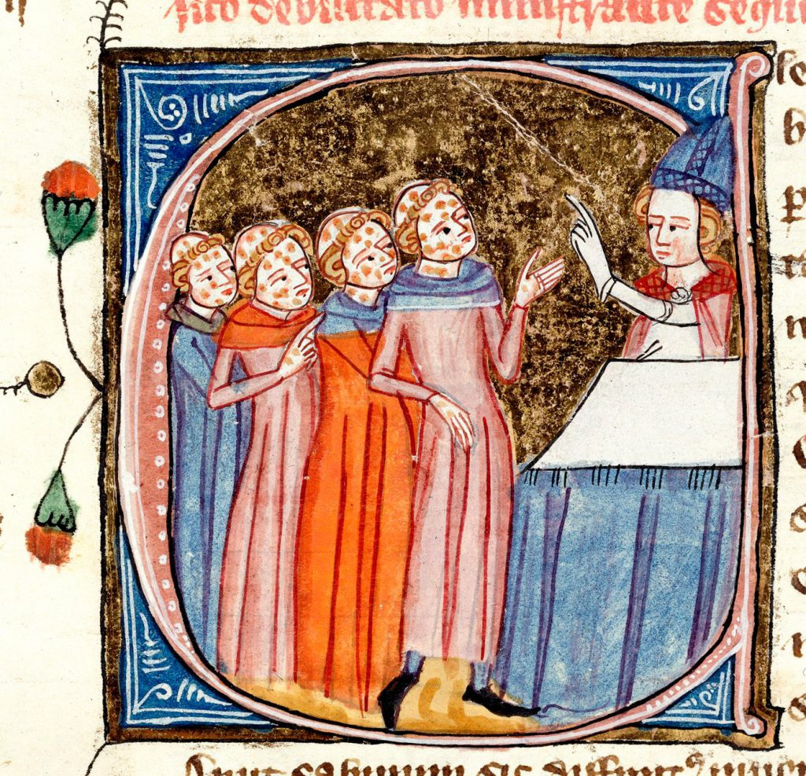
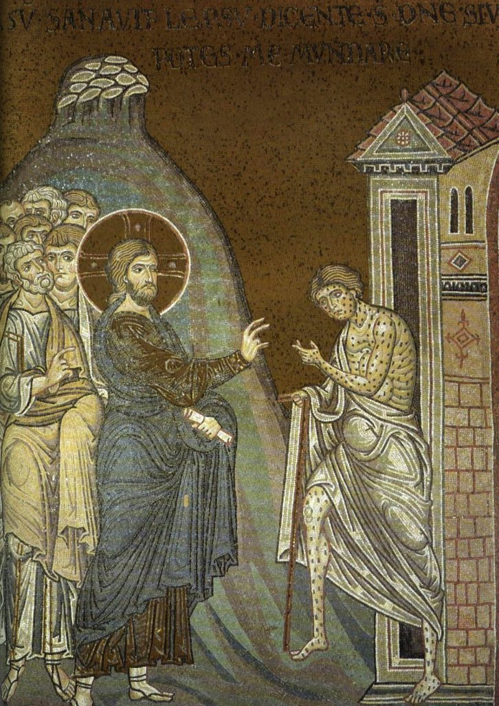
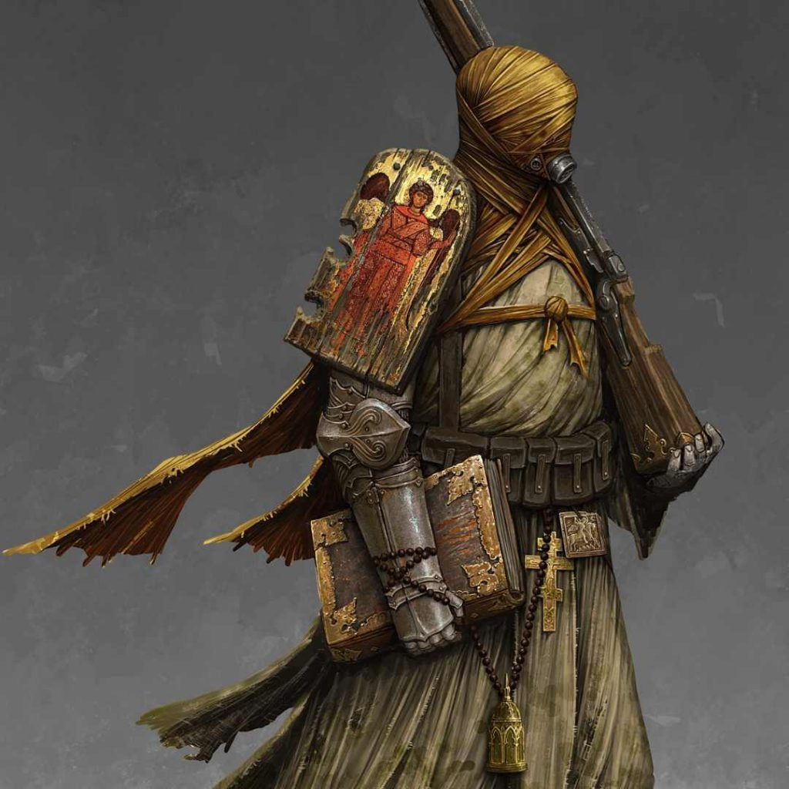
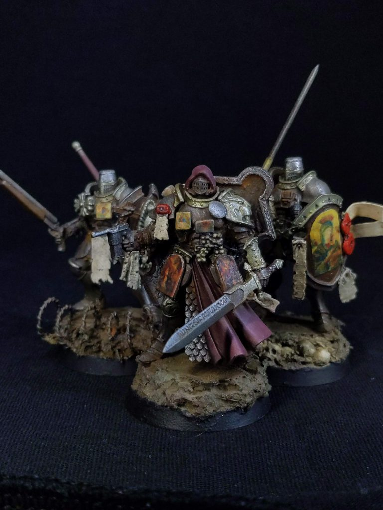
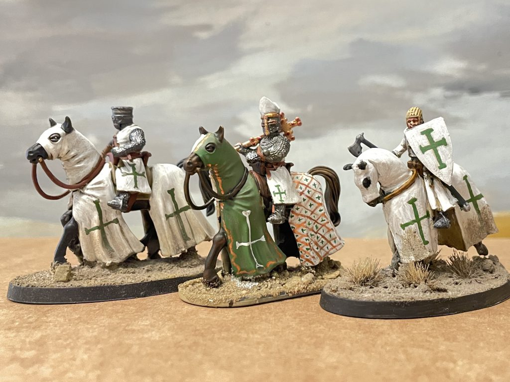
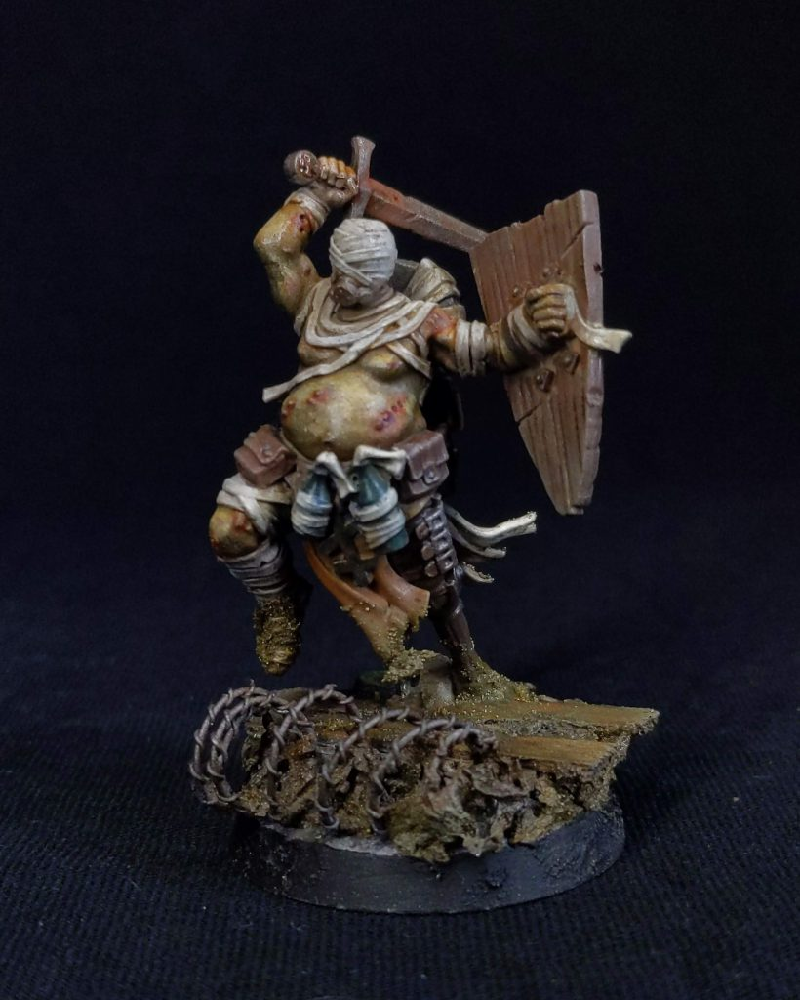

Lore Explainer: Trench Crusade Sacred Affliction
The Carcass Front has brought with it grim tidings of plague, fanaticism and madness, most of it coming from the delightfully modelled and utterly dedicated Trench Pilgrims of the Sacred Affliction. That means it's time to dive into the lore and real world inspiration for everyone's newfound favourites. In this article we'll be talking about diseases, and while there won't be any medical reference pictures, clicking into links and doing any of your own further research is going to bring up some pretty graphic images, so be warned!
A note on terminology. I’m not going to use the word “leper” in this article after reading quite a bit about how the word was and is used to brand people - as you’ll read about below - as unclean/other. Sometimes that means I get a little clunky. It is, I realise seconds before posting this article, in most of the image captions though.What Is the Sacred Affliction?

Credit: DandyAfter the Prince of Decay unleashed his terrible Black Grail across the face of Europe, the wandering multitudes of the European faithful encountered a terrifying new reality - sentient, grasping plagues. Column after column of emaciated, dying pilgrims fled the onset of the Grail and were denied sanctuary in the last remaining bastions of health and wholeness. One such column was led by he who would become the Prophet Solon, lost hope. Barricading themselves into tombs to sequester themselves from the living, they awaited death only to find it would not take them. Blessed by God, their wounds anointed by the Virgin Mother, the first of the Processions of the Sacred Affliction emerged from living death, to fall on the armies of hell as a relentless, impervious force of heavenly wrath.
The Sacred Affliction are another example of what Trench Crusade does best - delve into the history and society of Medieval Eurasia and come up with something that builds from reality into grim horror. There are a lot of different inspirations coming through here, mainly drawing from Judeo-Christian ideas of ritual and bodily purity, 11th-14th century European medicine and the history of leprosy. It's a complex mix, largely because all of this comes with significant social meaning - loaded terms, stigmas and the difficulty of diagnosing historical diseases means we'll have to start off with the most basic question of all.
How Can Affliction Be Sacred?
The idea of a disease or illness having a spiritual dimension has been largely lost in modern western medicine but before the advent of germ theory it was a globally widespread belief. Throughout human history, people with various illnesses, diseases or disabilities have been linked to a sacred (or, for fans of Dagoth Ur [the building] divine) cause and this most likely reaches all the way back to the origins of human society. - There's good evidence first cropping up in the Mesolithic where burials like that of Bad Durrenberg and Hilazon Tachtit show individuals with disabilities that would have significantly changed their behaviour associated with “ritual” items. Unusual burial goods - in these cases headdresses, tortoise shells and a whole human foot - point towards some kind of meta-social connection. As medicine advances, the social and religious aspects of disease come and go according to the patterns of human history. Epilepsy is the first condition that I know of that is actively described as sacred (in the Hippocratic body of work around 400 BC), but the more pertinent link for Trench Crusade is the ultimate cause of disease: God.

Legitimately just including this for the facial expression, which makes me laugh every time. Detail of ornamental S, British Library Royal MS 6 E VI, fol. 104 via WikipediaThis is by no means a universal belief even at the time our timeline diverges from Trench Crusade (1099). Over in the Frankish west, sickness and disease wasn’t always seen as caused by God, but an element of disease as punishment and blessing has deep roots in medieval Christianity from both Jewish and Pagan forebears. Disease, and particularly pandemic disease, was a sign that a society was doing something wrong, with the suffering following acting as instruction, warning and punishment all in one. There’s a lot of Biblical grounding to this - the Plagues of Egypt in Exodus and repeated plagues for various things in Samuel - and as the history of Christianity in the dying Roman Empire was very much shaped by recurrent outbreaks of Plague (Yersinia pestis) during the first great Pandemic, it’s no wonder that catholic Christianity took this very seriously. The arrival of a disease into a community may have accurately been identified as caused by food, infection, rats and so on, but ultimately whether you came down with it or not was due to the judgement of God on individual and society. It's a little unfair of me to characterise European medicine like this as it did change and rapidly evolve, but outside of the hospitals and medical schools, disease having an inextricable link to the divine will is pervasive. It's telling that one of the earliest medical compendiums in post-classical history (the Lorsch Pharmacopoeia) spends a good ten pages defending the concept of treating diseases and sickness rather than just letting God sort it out in the end. It makes sense - without the knowledge (even with!) of how and why sickness happens, what else could it possibly be? Tiny invisible living blobs that reproduce inside your body until you die is significantly less plausible.
It’s not a far leap from being blessed by the divine by a recovery from disease to being blessed by the divine with a disease, the place we find the pilgrims of the Sacred Affliction. The pilgrims aren't, though, based on just any illness or disfiguring disease, but have close aesthetic and thematic ties to one in particular: Leprosy.Leprosy and Hansen's Disease
While disease generally has that sacred connection, leprosy specifically has closer ties to Christianity that, in the warped world of Trench Crusade, come to a full and horrible fruition. As we know it today, leprosy is a bacterial infection caused by Mycobacterium leprae that leads to characteristic tissue damage, nerve damage and secondary necrosis. More properly, infection by Mycobacterium leprae (or Mycobacterium lepromatosis) causes Hansen’s disease. The history of infection is murky, with the first archaeologically attested cases being in India, before scattered findings around Eurasia. It's not definitively known where it originated, but what we can know - and especially important for Trench Crusade - is that by the mid-11th century, leprosy is firmly part of European life.
The division between Hansen's disease and leprosy is important piece of nomenclature because while we know Hansen’s disease was present in medieval Europe and Asia, we don’t know that it was the sole cause of the social and religious phenomenon of leprosy, so you can have one without the other. By the time there’s identifiable and guaranteed Hansen’s disease in Europe, Asia had had it for some time and Greek, Latin and Coptic Bibles had been translated to include the term. Some (Many? All?) biblical references to leprosy may well be other conditions, and with some exceptions, most of the sources talking about leprosy before Chinese medicine identifies it in around 260BC are probably talking about something else. What leprosy was is hazily defined even in the 11th-14th centuries when it is at its most common in Western Europe, so it is likely - if not inevitable - that the leprosariums of Europe held people with a variety of conditions.

People with Leprosy being taught something by a Bishop. Via Wikipedia: Royal 6.E.vi, f. 301 detailWhat really defines leprosy is the social situation around it. A person with Hansen's disease, or other condition identified as leprosy, became a "leper" (last time you'll see that term) through social means. People deemed to have leprosy were separated out from wider society, either through the rigorous social death of the Separatio Leprosorum, where the person with leprosy would be led to an open grave and symbolically cast out of their community, or through seclusion in a leprosarium (leprosy hospital). People moving from place to place would then have had to carry identifying symbols, often bells and hoods. These have become a defining image of medieval leprosy - people with leprosy forced to cover their faces and signal their approach with distinctive bells and clappers. The bells would have alerted others to the presence of people with leprosy, and there's a lot of art and references out there to people scrabbling to avoid sufferers, the bells both encouraging and facilitating social distance and social stigma. This is very much present in the Carcass Front models, where all the Sacred Affliction models have their faces at least partially covered, and many have bells or other clappers/sound making devices attached to them.
Conversely, if an individual has Hansen’s disease but has not (for example) gone through the ritual separation, what they had/have is a bacterial infection, not leprosy. Again, this has a good parallel in Trench Crusade, where the pilgrims of the Sacred Affliction don’t necessarily have leprosy - in fact, one of the diagnostic elements points to something rather different:
Rarely, the Wheel of Fortune turns that this communal blend of Afflictions blooms fully across a Leper-Pilgrim’s body, with no part left untouched by the Lord’s will.Other groups do (of course) have “textual” leprosy we might take to mean biological:
They each praised God for the miraculous visit of the Blessed Mary, who bathed their flesh and bade them bear their afflictions as a gift from the Lord: each pockmark a sign, each lesion a lesson, that they might foster the strength of body and soul needed to defeat the forces of Hell.Regardless, the important point is that these groups have leprosy, not necessarily Hansen's disease. They are socially and religiously treated as having leprosy - bound in their bandages, brought into the community, herded into their processions - no biological infection is needed.
Leprosy and Christianity
Leprosy occupies a special place in Christian thinking, echoing the increasing frequency of Hansen's Disease as Catholicism goes from the religion of Western Europe into the Papal Hegemony over the High Medieval Period. Jesus, rather famously, as usual with things Jesus did, met a group of ten leprosy sufferers on the road to Jerusalem and performed a healing miracle of some kind. His most famous healing miracle - raising Lazarus from the dead - became conflated with another Biblical Lazarus commonly depicted as having Leprosy, giving the terms Lazarine and Lazar to medical dictionaries for particular forms of Leprosy. It was a big deal - both a feared and despised disease, but also a route and connection to divine grace.

Jesus heals a person with Leprosy, Mosaic in Monreal via WikipediaThis connection comes right through into the medical treatment of leprosy in the medieval period, and it's telling the only example of curing leprosy medieval doctors would have had to discuss was divine - and in all four gospels! More than that though, the specific progress of leprosy was (sometimes) seen as close to the sufferings of Jesus on the cross, making individuals with leprosy that bit closer to the experience of Jesus. This isn’t to say the stigma and persecution was lessened, and individuals with leprosy held the difficult position of both being spiritually to blame for their illness and living reminders of the charity and miracles of the faith. Traditions emerged that saw them as the chosen sufferers of Christ, chosen people to be ostracised, used as a lesson, avoided - but also used as a shortcut to piety, even envied for their closeness to God. Noted patron saint of Games Workshop HQ St Hugh of Lincoln (Technically this is true! Look it up) wrote confidently that people with leprosy would skip all the difficult bits of the afterlife and be immediately raised to heaven and cured after death.
Treating, dealing with, managing and working alongside leprosy sufferers therefore took on particular elements of social and religious importance in Medieval Europe. Actively washing the feet of, or taking the bandages from, people with leprosy was, for want of a better term, a pious flex - not only something that only the most gracious and charitable would do, but a test of your own divine protection against disease. Hansen's disease is not particularly contagious, so the biology of this very visible and disfiguring disease played into the hands of this kind of treatment. Cursed and ostracised, but safe enough to touch for religious purposes. That tension between blessing and curse is very present in Trench Crusade (I’ll take a quick break here to say how much I enjoy the way Trench Crusade lore really tries to capture this stuff). The Pilgrims of the Sacred Affliction have their own community that is simultaneously shunned and courted. Far from being complete outsiders, despite their bandages and sicknesses, they are actively accompanied by members of the religious orders in the form of the Stigmatic Nun. As in our world, active ministry to the very people Jesus healed is part of the mission of charity, even if in Trench Crusade that means helping them to hit people with hammers. In trench crusade, as in Catholicism to this day, closeness to the “special sufferers” is closeness to the pain and sacrifice of Jesus.
Rites of Pure Tzaareth
Ghoulishly I wondered what else the Pilgrims might have, particularly with the lavish description of blooming afflictions, which led me straight into another interesting area that Trench Crusade has extensively mined - tzaarath. I am even less of a scholar of the Torah than I am of the Gospels so this bit is almost guaranteed to have some serious errors in it - but here it is to the best of my understanding anyway!
The Sacred Affliction pilgrims are bound by the Rites of Tzaareth, which are the particular initiation rituals that transform disease and sickness into a holy gift of God within the Trench Crusade universe. They are wonderfully kind - no horrific scarring that you might expect here - but function as a way of providing mutual comfort and a strangely touching element of an otherwise pretty horrifically described faction. Tzaarath is a Hebrew word usually translated as leprosy, referring to a wide range of ritually impure skin conditions that, under the Laws of Leviticus, require purification before an individual is readmitted fully into society. The version in Trench Crusade is an inversion of the wonderfully detailed and considerate approach to skin conditions and ritual/biological cleanliness.
Within the laws of tzaarath, defined criteria for lesions, growths, marks, and blemishes provide the boundaries of socially “acceptable” disease and affliction. Within the boundaries, whatever is causing, say, a growing patch of scaly, discoloured skin, is not a socio-religious problem and therefore not a significant disease. Outside of it, an individual must sequester themselves or be sequestered while cleanliness and purity rituals are undertaken.

Pilgrim of the Sacred Affliction. Credit: Trench CrusadeThere’s a lot more to this, but you can see the parallels in Trench Crusade, where the pilgrims of the Sacred Affliction apply their own rites (and standards) under the same name. Again, the purpose is to bring people together into a single unit. This is both exclusion (get away from everyone else) and inclusion (become part of this group). In my admittedly limited reading about tzaarath (a couple of hours at most - sorry!) there’s active discussion over how these laws functioned, and continue to function, in real life, either as a social protection against potentially dangerous or contagious conditions, or as a list so specific and hard to fulfill that it has the exact opposite function, allowing a mechanism for the rehabilitation of people with a clear and obvious visual difference back into social engagement. I like this latter theory (who doesn’t love a theory that says “actually it was completely the other way around”), backed up by the fact that there aren’t really any conditions sufficiently described by tzaarath to be a specific infection or disease. Of course, because this is trench crusade, a mad hell-world, the entire structure is turned in its head - presence of the characteristic blemishes is celebrated as a cause for further integration rather than segregation. It’s interesting as well that the pilgrims specifically get the diagnostic traits that don’t happen in nature (but do happen in the tzaareth rules) - surely a sign that there really is something divine going on.
The Knights of St. Lazarus
The idea that people suffering with disease would be organised into quasi-military units sounds like one of the more outlandish parts of the Sacred Affliction lore, but it is very much true to life. The concept of knights with leprosy is firmly based on the real world, in the Knights of St. Lazarus (or Order of St. Lazarus), one of the smaller military orders operating in the Levant from the 12th century until the fall of the Crusader states. Like their more famous brethren in the Hospitallers, the order began as a medical one, operating leprosy hospitals first in the Middle East and then across Europe. As the Orders (in our world including the Templars, but definitely not in trench crusade!) transitioned into military roles in the Crusader Kingdoms the Knights of St. Lazarus did so as well. Whether or not the Knights or lay brethren had leprosy is up for discussion, as their focus was initially on caring for leprosy patients rather than rounding up Knights who had fallen ill. The common assumption is that the Knights did have leprosy, but this may not have been universal - and plays into the same definitional problems of leprosy as disease or social position.

Kitbashed Leper-Knights. Credit: DandyIt’s another case of the inclusion/exclusion dynamic, the order providing the same kind of ranked, hierarchical, knightly order as the Hospitallers and Templars, but for the specific social category of leprosy. Members could transfer to it from the other orders, or swear into it as (sufficiently well-off) laity. They retained control over the leprosarium systems, which would become additionally important as the rates of leprosy (Hansen’s disease connotation) grew in the 12th and 13th centuries. Their military history is probably as you’d expect from people with an often debilitating illness - when they turn up in orders of battle the description is usually along the lines of “all the brothers died in this battle”. Nevertheless, they were present, armed, and fighting, in the key battles of the Kingdom of Jerusalem all the way up to the final fall of Acre. There, it appears they were put right on the front line, with the order ending as a military force with the complete annihilation of the brotherhood. It’s hard to find many references to their military exploits, but this is in keeping with both how battles were written about and their unusual social position, so there’s no real information about how they fought or what they wore - a green cross or white cross on green is possible, and you’d expect standard Levantine knight gear. The elaborate face masks of the movies are probably just that - especially for a not particularly wealthy knightly order.
By the time the Knights of St. Lazarus were fighting and dying in Acre, the order had spread around Europe through hospital brethren, bequests and grants. It still exists in a form today, as a charitable organisation with a particular focus on leprosy.

I have a giant Order of St Lazarus army for Historicals!In Trench Crusade, Pilgrims of the Sacred Affliction follow in the path of the Knights of St. Lazarus, transformed through the hideous rituals required to cleanse the Knightly orders of their sin-of-association. There's a good echo here of the historical connection between the Knights of St. Lazarus and their patients/lay brethren/raison d’être. They most likely provide a wider inspiration too - the association of medieval leprosy and fanatical religious violence is made through the half remembered legend of the Knights of St. Lazarus. It makes for one of those good old “the past is so crazy” stories, where knights considered to be living dead took up arms to defend the crusader ideal - the reality is significantly more prosaic.
Inspiration in Models
I feel like that's quite a bit of medieval medicine and Biblical interpretation done, isn't it? We can establish that the Sacred Affliction of Trench Crusade is a kind of metastasized, warped version of Christian and Jewish ideas of disease and cleanliness - the kind of thing that you'd imagine really would develop given the miracle and horror strewn world of Trench Crusade. A lot of this is brought through in the Carcass Front models - bedecked in bandages, icons and crosses, but there are some specific bits I wanted to flag because I particularly like how they’ve ended up in plastic.

Leper Pilgrim. Credit: DandyProcessions were a big deal in medieval Christianity. They could be spontaneous, centrally organised, led or acephalous, could be purely religious or have political motives, end up dispersing on their own or be put to the sword and, worst of all, could essentially act as genocidal armed "pilgrimages". The most famous is most likely the Flagellants - a semi-spontaneous movement of minor religious orders and laity who cropped up from the 13th to 15th centuries, usually in response to a particular crisis. This includes the Black Death, where the popular image of Flagellants comes from, the shambling horde of self-mortifying fanatics, whipping themselves into a literal religious mania. You can see this thread coming through in the Carcass front with the Wrath of God Pilgrim, where the spiked flail and morning star calls to the image of the flagellant.
 Leper Pilgrim. Credit: Dandy
Leper Pilgrim. Credit: Dandy
Millstones (proverbially!) carry a great deal of weight, with direct biblical inspiration for the ever-present stones the Pilgrims wear. The Gospel of Mark has Jesus warn that “If anyone causes one of those who believe in me to stumble, it would be better for them if a large millstone were hung around their neck and they were thrown into the sea”. The millstone is a sign of a serious transgression, as well as being a divinely ordained punishment.
 Lazarist Castigator. Credit: Dandy
Lazarist Castigator. Credit: Dandy
Finally, I have to take the opportunity to talk about the Lazarist Castigator - the adjudicator, confessor and judge of the Sacred Affliction. More specifically, the hat - it's a Galero, the wide-brimmed, tasseled, and very very red Cardinal's hat used from 1245-1969. This is such a wonderfully specific aesthetic reference that, while having no connection to the Sacred Affliction that I can spot, couldn't go unmentioned.
Get Your Pilgrimage Going
You really do just have to love where the Trench Crusade guys go with concepts drawn from our world into a distinct grimdark one. So much of the Sacred Affliction is very much real, to the extent that there's a huge amount I could follow on with - pilgrimage, bells, ritual use of bandages, all sorts of things - almost endlessly. What is always done so well though in Trench Crusade is the twist, the pull that takes the historical basis and turns it into a recognisable grimdark pastiche without cheapening any of it. This is an excellent example of this kind of grimdark alt history - not just asking "what if hell were real", but what would that do to specifically 11th century beliefs. In the face of war and madness, the thread of a world that developed out of ours is still there, and that is, again, a real achievement.
Have any questions or feedback? Drop us a note in the comments below or email us at contact@tabletopbattles.com. Want articles like this linked in your inbox every Monday morning? Sign up for our newsletter. And don't forget that you can support us on Patreon for backer rewards like early video content, Administratum access, an ad-free experience on our website, and subscriber-only content covering competitive Warhammer 40K!Originally published on Goonhammer.


Leave a Comment